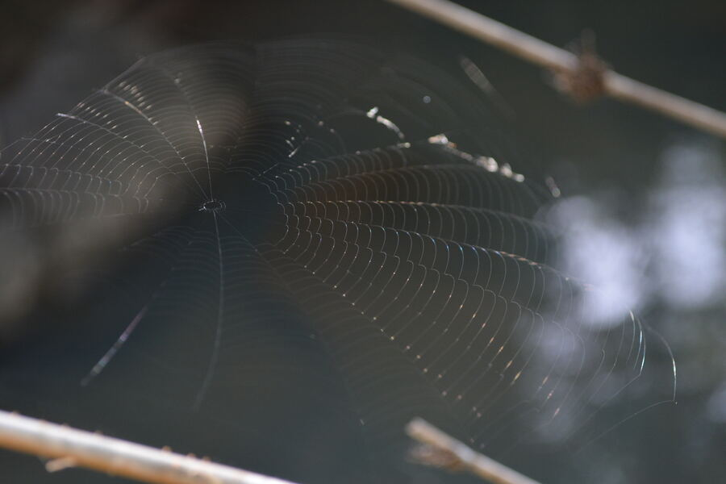

🕸️ Spider-web swabs
2024 · 2025
Orb spider webs sampled within the same 10 × 10 m plots as leaf swabs. In 2024, dedicated 3-minute swabs of orb webs in NAP buffer. In 2025, pooled with leaf swabs on the same swab head — three spider webs sampled per swab, in addition to the leaves. Webs passively trap eDNA from passing vertebrates — particularly bats — and significantly outperformed every other terrestrial substrate in the methods benchmark.